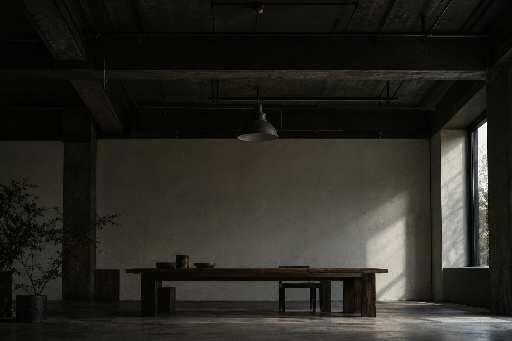

关于我们
我们是一支
小而专注的团队
在品牌、空间与数字之间，寻找清楚而有温度的表达。我们从认真听见一个问题开始，让每一个细节都有来处。
我们相信，好的设计不必喧哗。把注意力留给真正重要的事，让内容与材料在恰当的位置相遇。
10年 · 关注日常
80+次 · 细节推敲
12个 · 共同视角
OUR LOCAL EXERCISE / 02
把想法，
慢慢变清楚。
同一张独立摄影的三个观察切面。
每一项都可以保留自己的工作札记。
ONE GOOD QUESTION
好作品，
从好好对话开始。
这里是独立页面练习；草稿保存在本页，不发送到任何工作室。